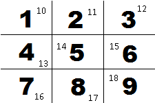

The purpose of this little fun game is to introduce people to the 5S Methodology.
It demonstrate the benefits of implementing 5S in the workspace, and in your personal life.
This board is your current workstation, and your goal is to click on each card, in sequence, from 1 to 50 . You will have 30 seconds to accomplish this task.
You scored :
Not easy right ? Luckily, we can use 5S to improve your score.
The first concept of 5S is Sort. At this step, we remove all unnecessary items.
It's much easier and safer to work in a cleaner environment.
Since we don't need number over 50, let's remove them.
Let's try again, to see your improvement !
You scored :
Good ! It was a little bit easier. But we can still improve your score.
The second concept is Shine. At this point, we clean our workspace.
Let's straighten the cards, and remove colors so all cards are the same.
Another concept in 5S is Set in Order.
We arrange all necessary items so that they can be easily
selected for use. So, let's sort the cards in quadrants.

Card 1 will be in quadrant 1, Card 2 in quandrant 2.... Card 10 will be in
quadrant 1. Look at the picture to visualize the quadrants.
You scored :
What a great improvement !
Let's do the Standardize and Sustain of 5S. It consist of
standardize the best practices in the work area. Sustain consist of keeping in
proper working order.
Since we need to click the card 1 to 50 in sequence, it seem logical to reorganise them
in a standard way to make our job as easy as possible.
You scored :
Look just how things improved.
No 5S
Sorted
Set in Order & Shine
Standardized
0/50
0/50
0/50
0/50
I encourage you to learn more about 5S. There's a lot of articles on the internet talking on the subject.